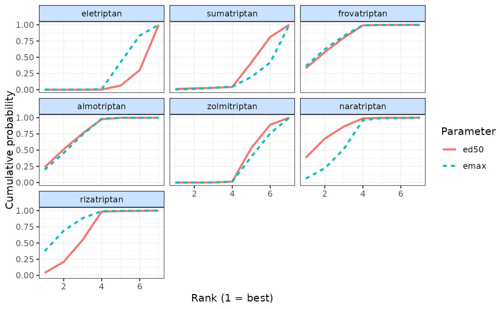

cumrank.RdPlot cumulative ranking curves from MBNMA models
cumrank(x, params = NULL, sucra = TRUE, ...)An object of class "mbnma.rank" generated by rank.mbnma()
A character vector of named parameters in the model that vary by either agent
or class (depending on the value assigned to level). If left as NULL (the default), then
ranking will be calculated for all available parameters that vary by agent/class.
A logical object to indicate whether Surface Under Cumulative Ranking Curve (SUCRA) values should be calculated and returned as a data frame. Areas calculated using trapezoid approach.
Arguments to be sent to ggplot::geom_line()
Line plots showing the cumulative ranking probabilities for each agent/class and
dose-response parameter in x. The object returned is a list which contains the plot
(an object of class(c("gg", "ggplot")) and a data frame of SUCRA values
if sucra = TRUE.
# \donttest{
# Using the triptans data
network <- mbnma.network(triptans)
#> Values for `agent` with dose = 0 have been recoded to `Placebo`
#> agent is being recoded to enforce sequential numbering
# Estimate rankings from an Emax dose-response MBNMA
emax <- mbnma.run(network, fun=demax(), method="random")
#> `likelihood` not given by user - set to `binomial` based on data provided
#> `link` not given by user - set to `logit` based on assigned value for `likelihood`
#> Compiling model graph
#> Resolving undeclared variables
#> Allocating nodes
#> Graph information:
#> Observed stochastic nodes: 182
#> Unobserved stochastic nodes: 197
#> Total graph size: 4115
#>
#> Initializing model
#>
ranks <- rank(emax)
# Plot cumulative rankings for both dose-response parameters simultaneously
# Note that SUCRA values are also returned
cumrank(ranks)

#> # A tibble: 14 × 3
#> agent parameter sucra
#> <fct> <chr> <dbl>
#> 1 eletriptan ed50 0.851
#> 2 eletriptan emax 1.74
#> 3 sumatriptan ed50 1.73
#> 4 sumatriptan emax 1.11
#> 5 frovatriptan ed50 4.87
#> 6 frovatriptan emax 4.99
#> 7 almotriptan ed50 4.93
#> 8 almotriptan emax 4.85
#> 9 zolmitriptan ed50 1.98
#> 10 zolmitriptan emax 1.72
#> 11 naratriptan ed50 5.27
#> 12 naratriptan emax 4.30
#> 13 rizatriptan ed50 4.37
#> 14 rizatriptan emax 5.29
# }